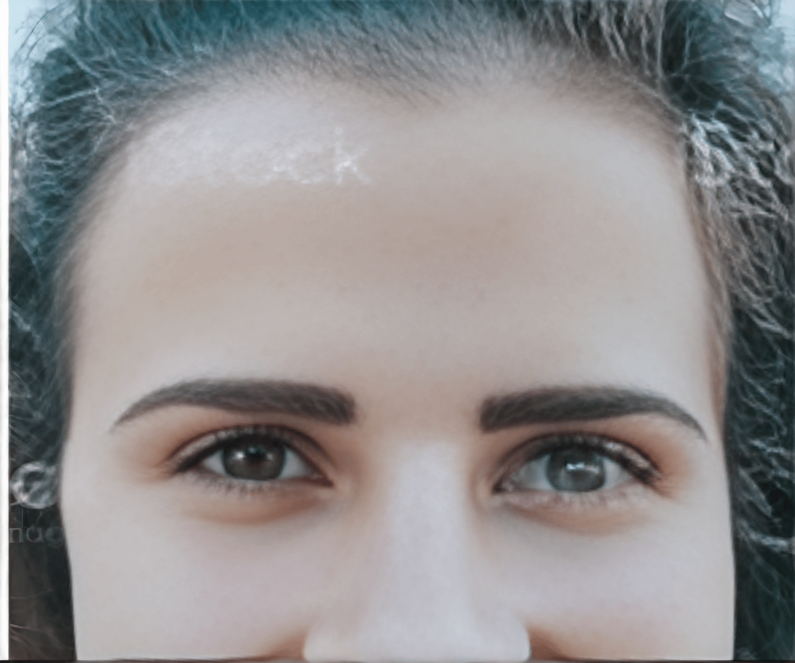
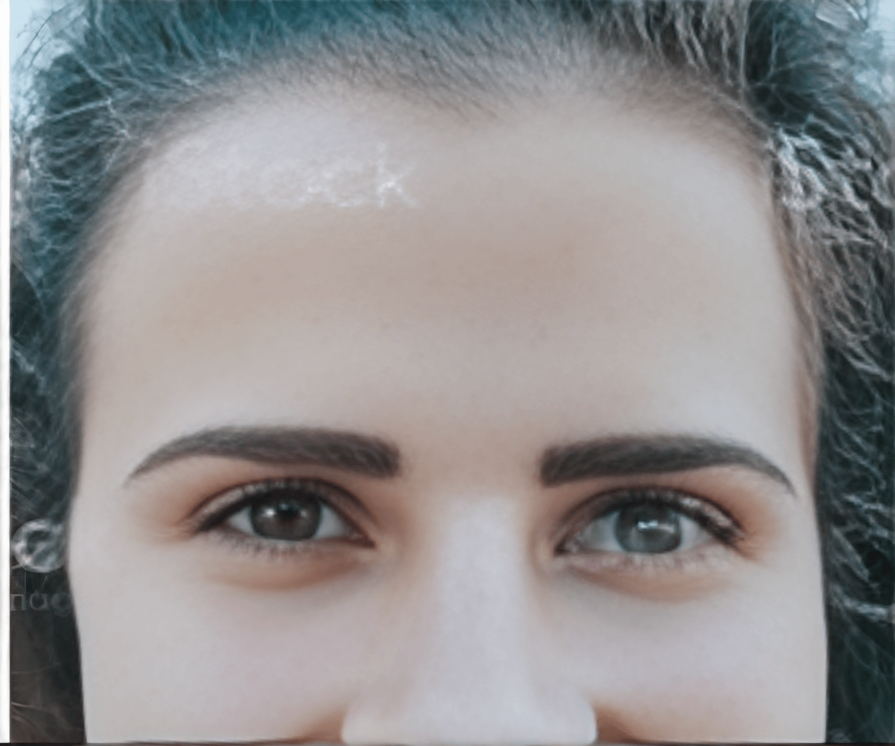

WHAT IS CHEMICAL PEELS?
Micro-needling is non-invasive skin resurfacing procedure that
uses ultra-thin needles to create small punctures in your skin to
trigger the production of elastin and collagen. It creates
channels for topical solutions to penetrate deeper into the skin
and work more effectively.
This procedure gained its popularity among men and women who want
to smooth and refine their skin without needing to spend long
recovery time.
It has been proven safe and effective, and many celebrities use it
to keep their skin youthful and bright.
WHAT CAN CHEMICAL PEELS TREAT?
A Micro-needling procedure generally takes half an hour or less,
depending on the areas treated. Besides facial rejuvenation it
could be used to improve aging skin on the chest, as well as
stretch marks on the stomach.
Prior to procedure the treatment area will be prepped with local
anesthetic to minimize discomfort.
A topical enhancing products like Hyluronic Acid or PRP can be
used after micro-needling to boost collagen and elastin production
leading to dramatic effects,
WHO IS AN IDEAL CANDIDATE FOR CHEMICAL PEELS?
BOTOX Cosmetic is an FDA-approved prescription medicine used to
improve the look of moderate to severe frown lines, worry linest
lipstick lines, crow's feet, and bunny lines in people 18-65 years
of age.
what is botox cosmetic?
Patient may experience mild redness that usually disappears within
1-2 days. This redness could be easily covered with makeup.
Following a micro-needling treatment, it is important to stay out
of the sun as much as possible and to protect the skin with high
SPF sunblock, since the skin will be more sensitive to CIV rays.
At Ledo Aesthetics you could expect a follow up with clinical
provider to insure skin care regiment that will preserve the
effects of the treetment.
Some patients may require more than one micro-needling session for
optimal results.
CHEMICAL PEELS RECOVERY AND AFTERCARE
If you are interested in learning more about micro-needling and
whether it's a good solution for you, don't hesitate to call Ledo
Aesthetics of Westwood for consultation.
 
